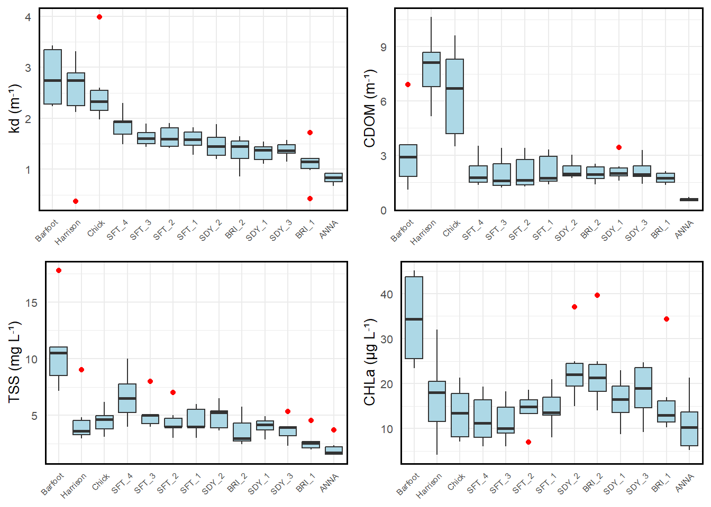
Thesis Plots (3/24)- for Committee Meeting
All data ANOVAs
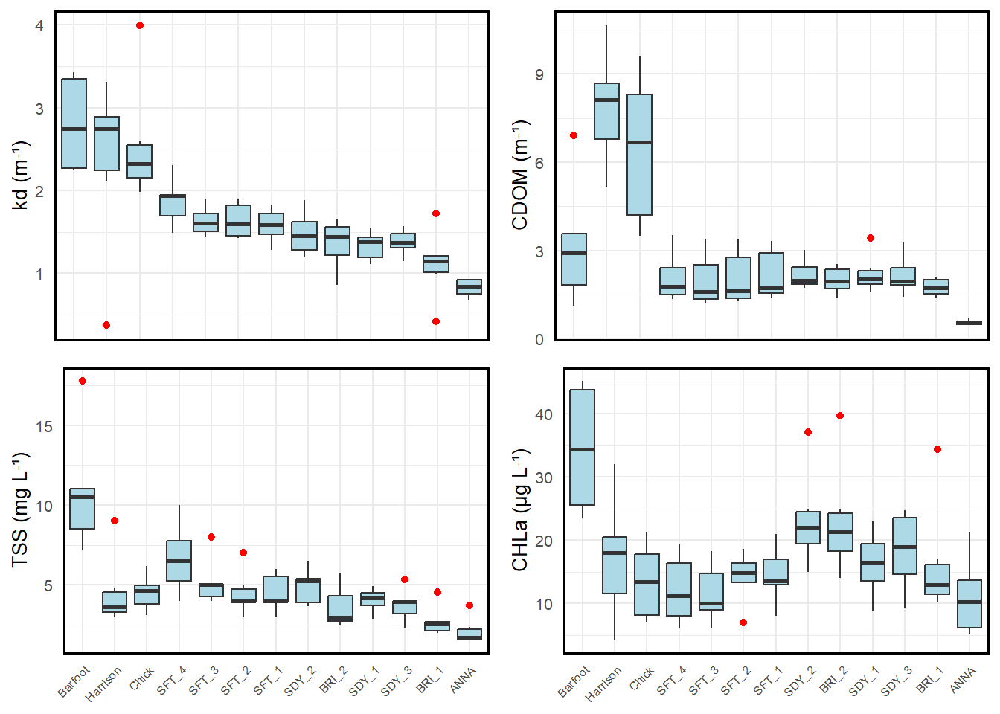
Comparison p adj
SFT_3-Barfoot SFT_3-Barfoot 0.039143122
ANNA-Barfoot ANNA-Barfoot 0.004219344 Comparison p adj
Harrison-Barfoot Harrison-Barfoot 4.308025e-07
Chick-Barfoot Chick-Barfoot 1.048770e-03
ANNA-Barfoot ANNA-Barfoot 2.068911e-02
SFT_4-Harrison SFT_4-Harrison 6.949079e-10
SFT_3-Harrison SFT_3-Harrison 3.918622e-10
SFT_2-Harrison SFT_2-Harrison 6.344251e-10
SFT_1-Harrison SFT_1-Harrison 1.155029e-09
SDY_2-Harrison SDY_2-Harrison 1.260442e-09
BRI_2-Harrison BRI_2-Harrison 4.192923e-10
SDY_1-Harrison SDY_1-Harrison 1.501065e-09
SDY_3-Harrison SDY_3-Harrison 1.136132e-09
BRI_1-Harrison BRI_1-Harrison 1.049864e-10
ANNA-Harrison ANNA-Harrison 1.666112e-12
SFT_4-Chick SFT_4-Chick 2.691806e-06
SFT_3-Chick SFT_3-Chick 1.537288e-06
SFT_2-Chick SFT_2-Chick 2.463210e-06
SFT_1-Chick SFT_1-Chick 4.408023e-06
SDY_2-Chick SDY_2-Chick 4.796421e-06
BRI_2-Chick BRI_2-Chick 1.642817e-06
SDY_1-Chick SDY_1-Chick 5.677490e-06
SDY_3-Chick SDY_3-Chick 4.338231e-06
BRI_1-Chick BRI_1-Chick 4.157977e-07
ANNA-Chick ANNA-Chick 4.104692e-10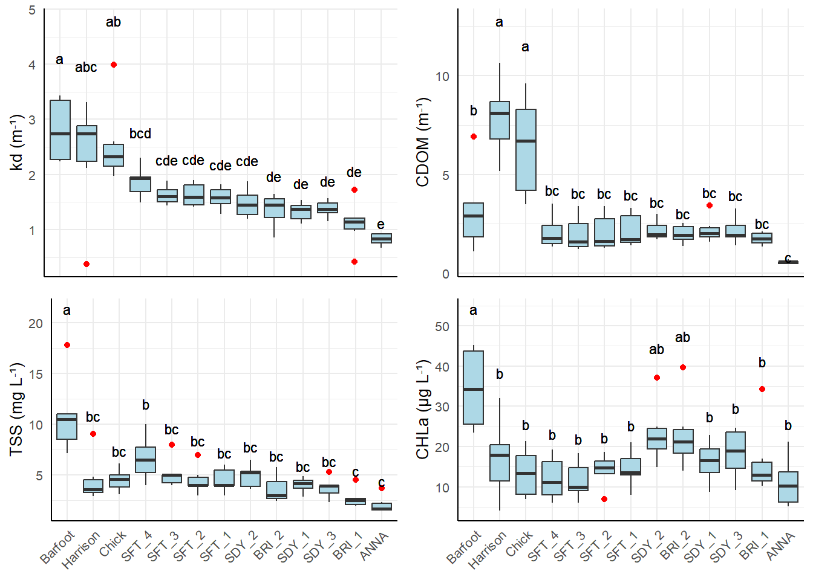
Station Average Data
# A tibble: 13 × 5
Site mean_kd mean_CDOM mean_CHLa mean_TSS
<chr> <dbl> <dbl> <dbl> <dbl>
1 2-BRI010.78 1.10 1.75 16.4 2.77
2 2-BRI013.12 1.36 1.99 23.1 3.64
3 2-CHK026.94 2.56 6.45 13.5 4.52
4 2-DYC000.19 1.63 2.06 14.2 4.5
5 2-MBN000.96 1.38 2.16 18.3 3.75
6 2-SDY004.27 1.33 2.21 16.3 4.03
7 2-SDY005.85 1.48 2.18 23.3 4.93
8 2-SFT031.08 1.58 2.17 14.5 4.5
9 2-SFT033.42 1.63 1.98 11.6 5.17
10 2-SFT034.38 1.87 2.08 12.1 6.67
11 5ANTW127.14 2.80 3.18 34.5 10.8
12 Harrison Near Dam 2.36 7.88 17.1 4.54
13 Lake Anna Dam Surface 0.825 0.560 11.1 2.08
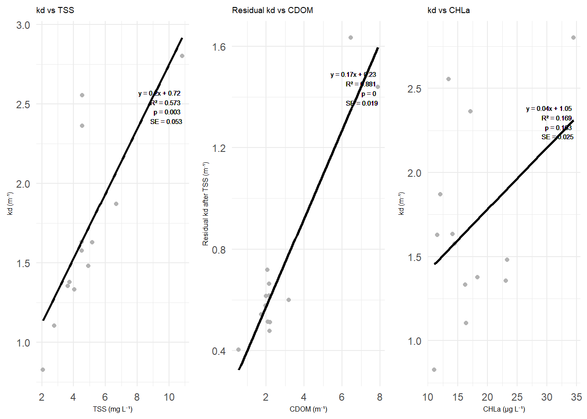
[1] "Residual Plots for Regression: kd vs TSS"
[1] "Residual Plots for Regression: Residual kd vs CDOM"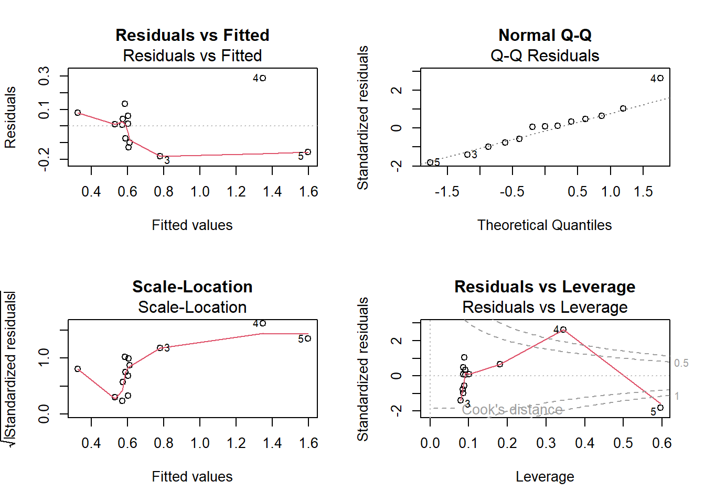
[1] "Residual Plots for Regression: Residual kd vs CHLa"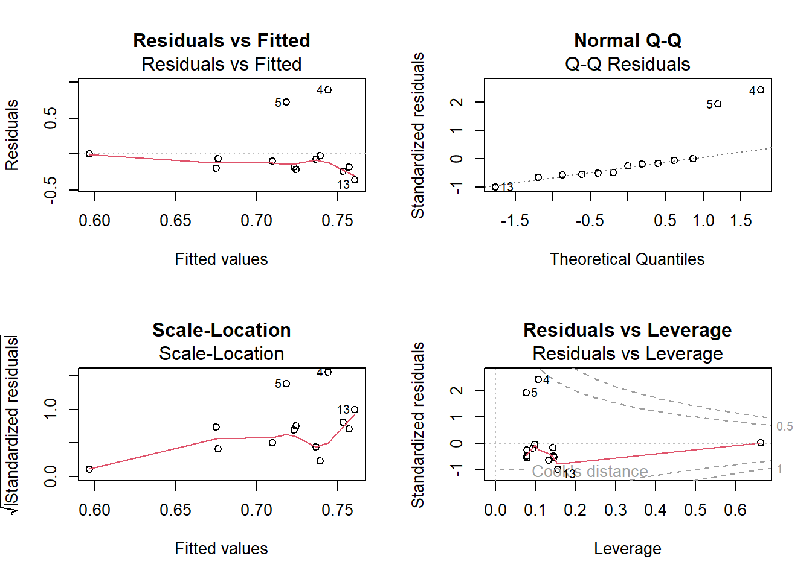
Multiple Linear Regression
Predictors AIC Delta_AIC
1 `TSS (mg/L)` + `CDOM a440 (corr)` -12.70936 0.0000000
2 `TSS (mg/L)` + `CDOM a440 (corr)` + `CHLa (ug/L)` -12.25530 0.4540582
3 `CDOM a440 (corr)` + `CHLa (ug/L)` 14.42792 27.1372783
4 `TSS (mg/L)` 16.37326 29.0826135
5 `CDOM a440 (corr)` 16.94783 29.6571880
6 `TSS (mg/L)` + `CHLa (ug/L)` 18.04674 30.7560956
7 `CHLa (ug/L)` 25.02982 37.7391749
8 25.43911 38.1484699The best model for predicting kd (m-1) is Model 1, which includes the predictors TSS (mg/L) and CDOM a440 (corr). This model has the lowest AIC and provides the best fit to the data. Model 2, which adds CHLa (ug/L) to the combination of TSS (mg/L) and CDOM a440 (corr), has a slightly higher AIC but still performs quite well, this indicates that the addition of CHLa as a predictor adds little to no predictive power to the model. On the other hand, models with only one predictor, such as Model 4 (TSS (mg/L)), Model 5 (CDOM a440 (corr)), and Model 7 (CHLa (ug/L)), perform significantly worse, with much higher AIC values. The intercept-only model. Overall, the results suggest that TSS (mg/L) and CDOM a440 (corr) are the most important predictors for kd (m-1), and adding CHLa (ug/L) slightly reduces the model’s performance.
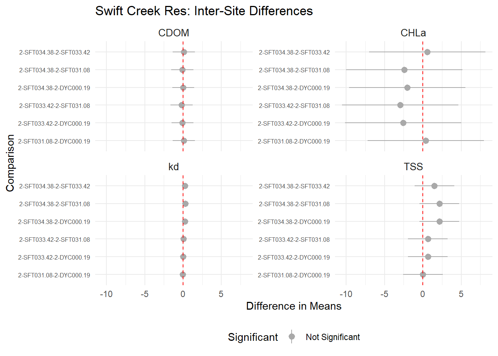
Lake Anna


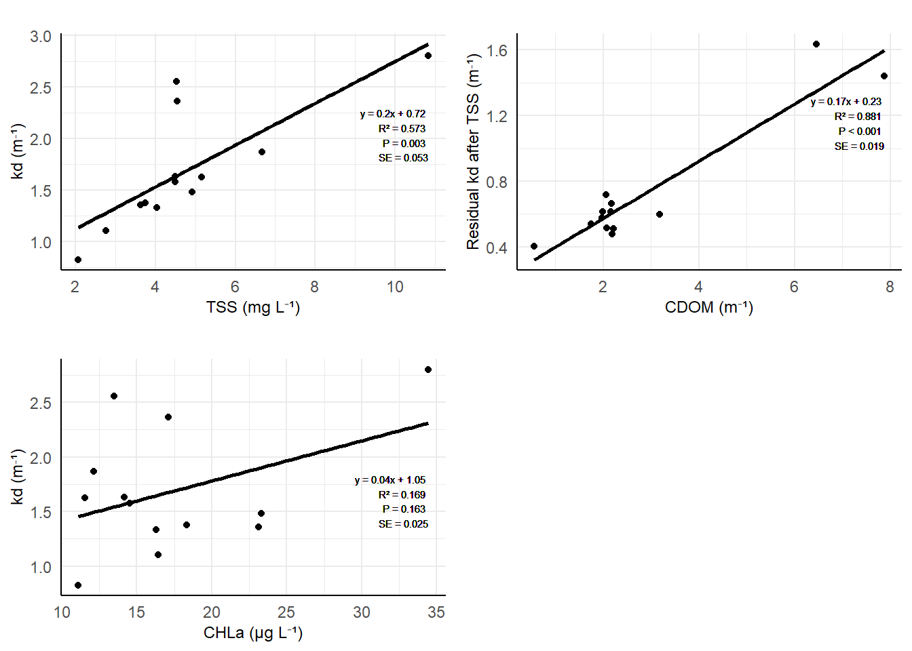
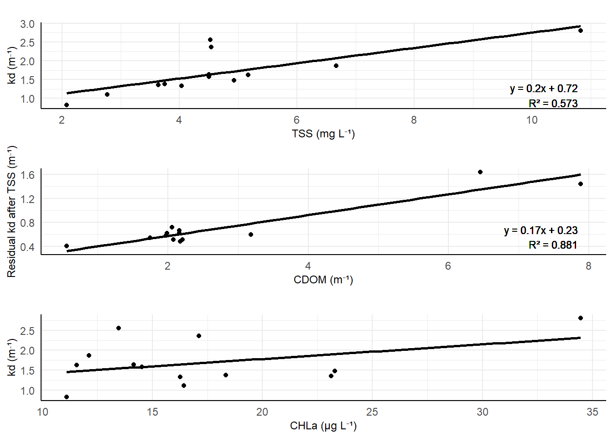
[1] "Lake Anna: Photic Zone kd vs TSS"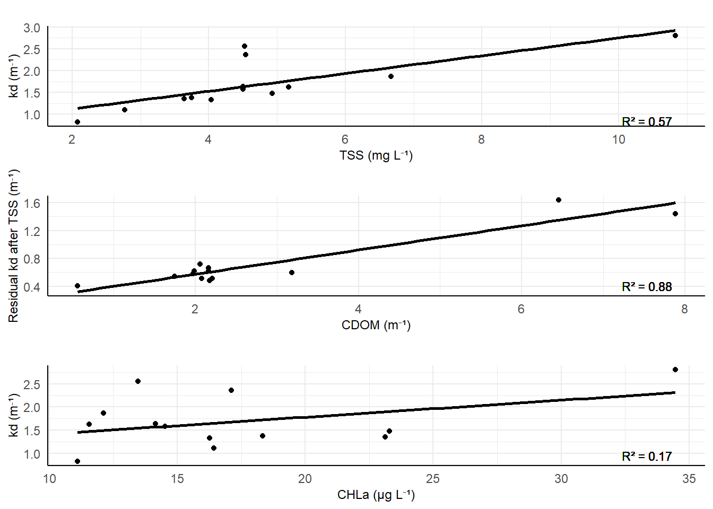
[1] "Lake Anna: Photic Zone kd vs CDOM"[1] "Lake Anna: Photic Zone kd vs CHLa"Lake Anna Multiple Linear Regression
Predictors AIC Delta_AIC
1 Photic_CHLa -35.00866 0.0000000
2 Photic_TSS + Photic_CHLa -34.55346 0.4551916
3 Photic_TSS -32.64198 2.3666706
4 Photic_CDOM + Photic_CHLa -31.70153 3.3071262
5 Photic_TSS + Photic_CDOM + Photic_CHLa -29.88434 5.1243107
6 Photic_TSS + Photic_CDOM -27.82204 7.1866139
7 -26.80083 8.2078294
8 Photic_CDOM -26.06498 8.9436716The results of the AIC-based model comparison indicate that Photic_CHLa is the most effective predictor for kd, as the model using only Photic_CHLa (Model 1) has the lowest AIC value. This model outperforms all other combinations of predictors, suggesting that Photic_CHLa alone explains the variation in kd more effectively than any other model. The inclusion of Photic_TSS alongside Photic_CHLa (Model 2) results in only a marginal increase in AIC, indicating that adding Photic_TSS does not significantly improve the model’s predictive ability. Models using Photic_TSS or Photic_CDOM alone, such as Models 3 and 8, perform considerably worse, with higher AIC values and larger delta AIC values, highlighting that these predictors are less effective in explaining kd by themselves. Furthermore, models that combine Photic_TSS with Photic_CDOM or all three predictors (Photic_TSS, Photic_CDOM, and Photic_CHLa) result in higher AIC values, indicating that adding these predictors does not enhance model performance. Overall, the findings suggest that Photic_CHLa is the most crucial factor in predicting kd, while other variables like Photic_TSS and Photic_CDOM do not contribute meaningfully to the model.
Polynomial Regressions
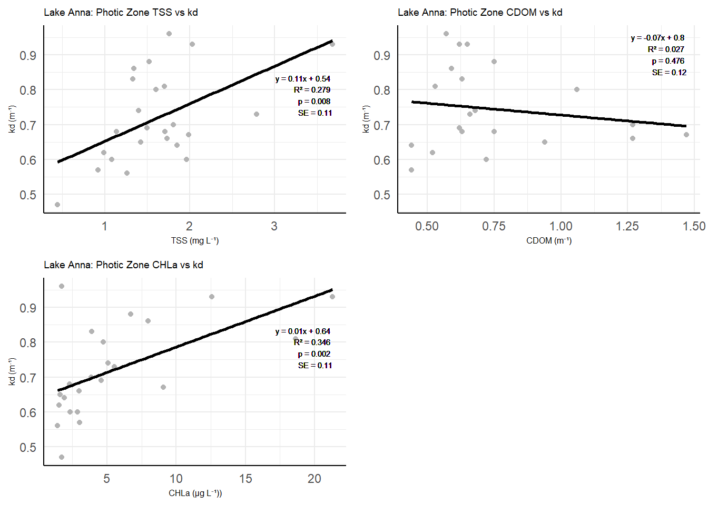
[1] "Lake Anna: Photic Zone TSS vs kd (Polynomial)"
Call:
lm(formula = y ~ poly(x, degree), data = data)
Residuals:
Min 1Q Median 3Q Max
-0.17508 -0.07022 -0.03686 0.06762 0.20898
Coefficients:
Estimate Std. Error t value Pr(>|t|)
(Intercept) 0.71917 0.02296 31.316 < 2e-16 ***
poly(x, degree)1 0.32943 0.11250 2.928 0.00803 **
poly(x, degree)2 -0.12271 0.11250 -1.091 0.28777
---
Signif. codes: 0 '***' 0.001 '**' 0.01 '*' 0.05 '.' 0.1 ' ' 1
Residual standard error: 0.1125 on 21 degrees of freedom
Multiple R-squared: 0.3174, Adjusted R-squared: 0.2524
F-statistic: 4.882 on 2 and 21 DF, p-value: 0.01815
[1] "Lake Anna: Photic Zone CDOM vs kd (Polynomial)"
Call:
lm(formula = y ~ poly(x, degree), data = data)
Residuals:
Min 1Q Median 3Q Max
-0.17330 -0.08049 -0.02843 0.07158 0.21176
Coefficients:
Estimate Std. Error t value Pr(>|t|)
(Intercept) 0.74429 0.02558 29.099 <2e-16 ***
poly(x, degree)1 -0.08630 0.11721 -0.736 0.471
poly(x, degree)2 -0.14063 0.11721 -1.200 0.246
---
Signif. codes: 0 '***' 0.001 '**' 0.01 '*' 0.05 '.' 0.1 ' ' 1
Residual standard error: 0.1172 on 18 degrees of freedom
Multiple R-squared: 0.09918, Adjusted R-squared: -0.0009154
F-statistic: 0.9909 on 2 and 18 DF, p-value: 0.3906
[1] "Lake Anna: Photic Zone CHLa vs kd (Polynomial)"
Call:
lm(formula = y ~ poly(x, degree), data = data)
Residuals:
Min 1Q Median 3Q Max
-0.17073 -0.06312 -0.00645 0.05379 0.31927
Coefficients:
Estimate Std. Error t value Pr(>|t|)
(Intercept) 0.71917 0.02146 33.518 < 2e-16 ***
poly(x, degree)1 0.36729 0.10511 3.494 0.00216 **
poly(x, degree)2 -0.14988 0.10511 -1.426 0.16858
---
Signif. codes: 0 '***' 0.001 '**' 0.01 '*' 0.05 '.' 0.1 ' ' 1
Residual standard error: 0.1051 on 21 degrees of freedom
Multiple R-squared: 0.4041, Adjusted R-squared: 0.3474
F-statistic: 7.122 on 2 and 21 DF, p-value: 0.004355
Lake Anna Multiple Polynomial Regression
Predictors AIC Delta_AIC
1 Photic_CHLa -35.00866 0.0000000
2 Photic_TSS + Photic_CHLa -34.55346 0.4551916
3 Photic_TSS -32.64198 2.3666706
4 Photic_CDOM + Photic_CHLa -31.70153 3.3071262
5 Photic_TSS + Photic_CDOM + Photic_CHLa -29.88434 5.1243107
6 Photic_TSS + Photic_CDOM -27.82204 7.1866139
7 -26.80083 8.2078294
8 Photic_CDOM -26.06498 8.9436716Based on the AIC values and their corresponding Delta AIC values, the best model for explaining the response variable kd is the one that includes only the predictor Photic_CHLa, which has the lowest AIC of -35.00866 and a Delta AIC of 0. This model provides the best fit to the data without overfitting. When additional predictors such as Photic_TSS and Photic_CDOM are added, the AIC values increase, indicating that these models perform worse. Notably, the model using all three predictors (Photic_TSS + Photic_CDOM + Photic_CHLa) has an AIC of -29.88434, which is higher than the single predictor model, suggesting that the addition of extra predictors does not improve the model’s performance. This implies that some of the predictors, such as Photic_TSS and Photic_CDOM, may not provide significant explanatory power for kd. The worst-performing models are those that include combinations of Photic_TSS and Photic_CDOM, which have higher AIC values and larger Delta AIC values, further confirming that these predictors do not contribute much to explaining the variation in the response variable. In conclusion, Photic_CHLa alone appears to be the most effective predictor of kd in this dataset.
Secchi Depth

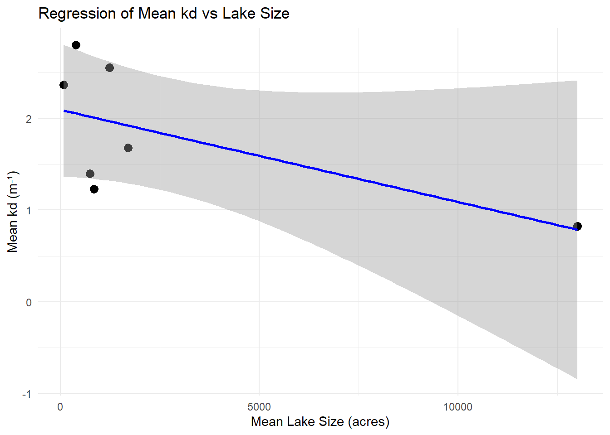


[1] "Not enough data for regression."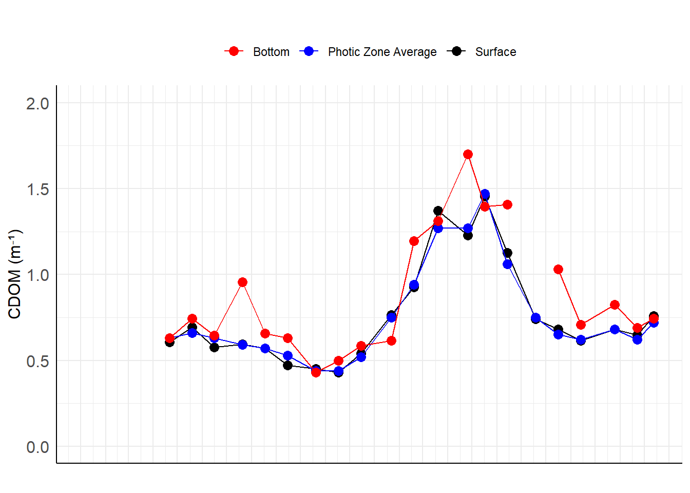
POC
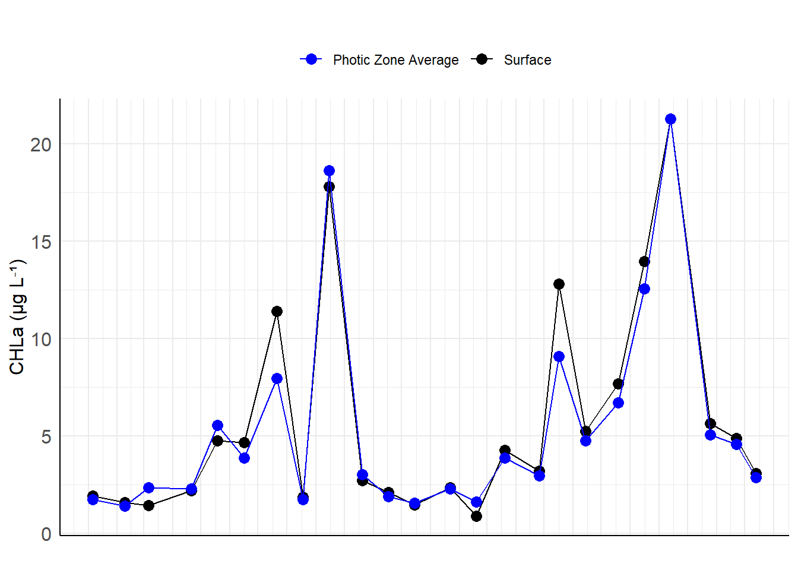
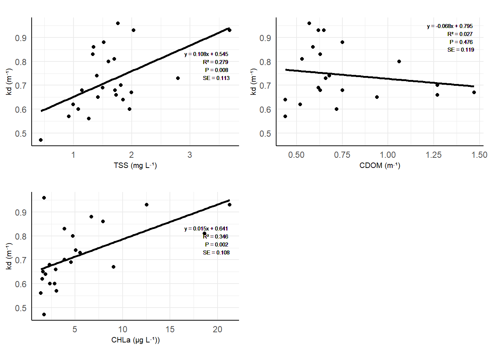
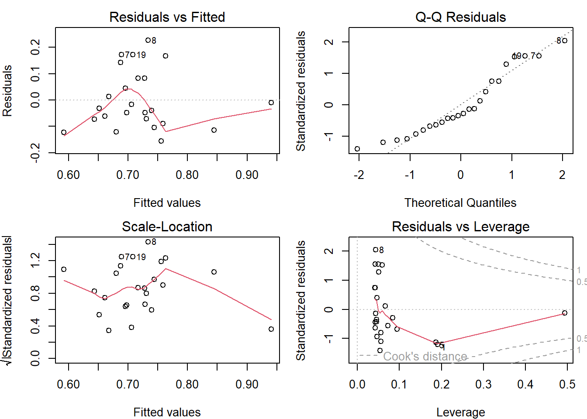
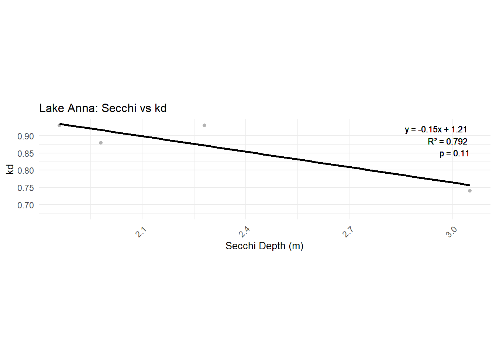
TSS C%
Min. : 1.990 Min. :11.80
1st Qu.: 3.217 1st Qu.:24.23
Median : 4.330 Median :28.20
Mean : 5.103 Mean :32.18
3rd Qu.: 5.365 3rd Qu.:39.67
Max. :17.810 Max. :69.50 


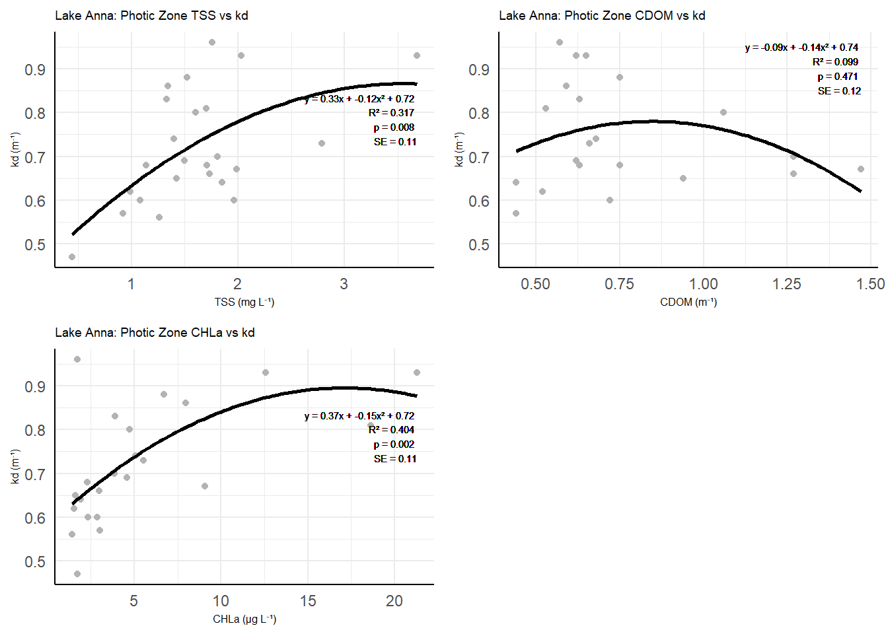